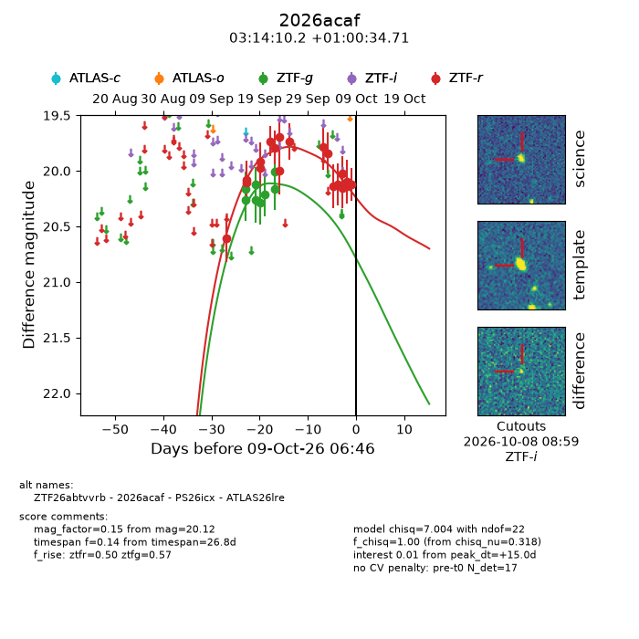
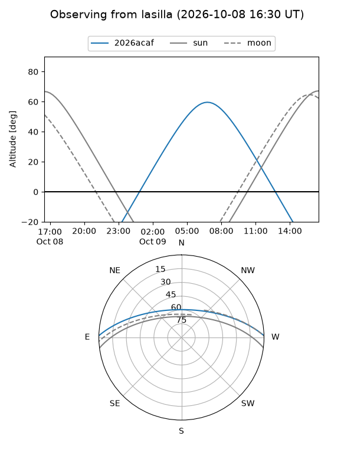
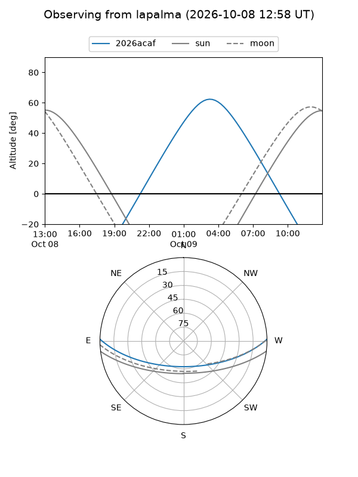
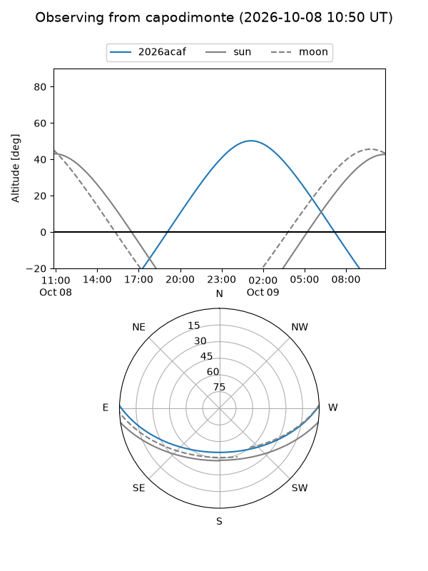
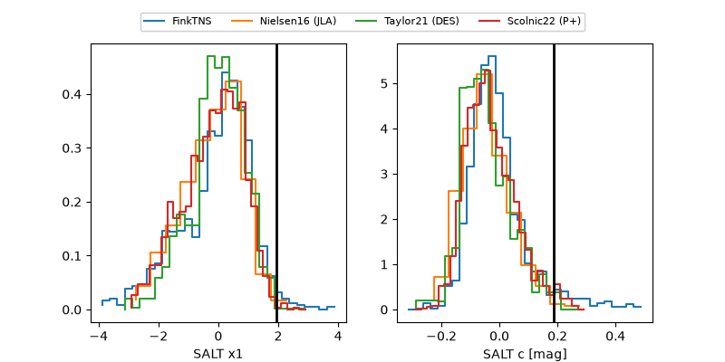

2026acaf
Target 2026acaf at 2026-10-09 06:48
Aliases and brokers:
FINK-ZTF: ztf.fink-portal.org/ZTF26abtvvrb
Lasair-ZTF: lasair-ztf.lsst.ac.uk/objects/ZTF26abtvvrb
ALeRCE-ZTF: alerce.online/object/ZTF26abtvvrb
YSE-PZ: ziggy.ucolick.org/yse/transient_detail/2026acaf
TNS name: wis-tns.org/object/2026acaf
Direct TNS query: direct search
alt names
ZTF26abtvvrb (ztf,fink_ztf)
2026acaf (tns,yse)
ATLAS26lre (atlas)
PS26icx (panstarrs)
Coordinates:
equatorial (ra, dec) = 48.5423,+1.00964
equatorial (HMS+DMS) = 03:14:10.16,+01:00:34.71
galactic (l, b) = (179.4330,-45.62297)
Flags:
TNS type: nan
peak dt: +15.0
Photometry:
last ztfg=20.01, ztfr=20.12
8 ztfg, 19 ztfr detections
Lightcurve

Visibility



Additional plots
